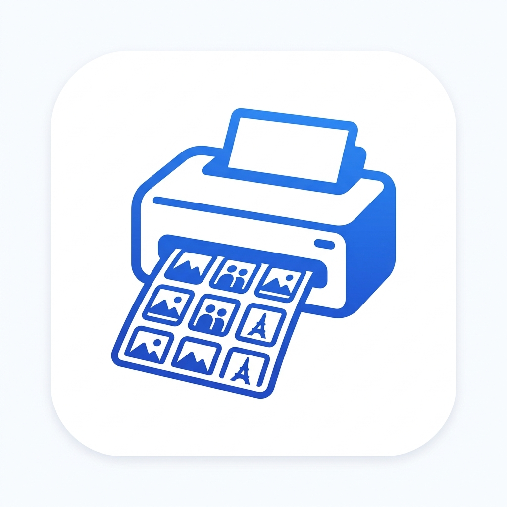

Precise Grid Control
Set rows, columns, margins, and cell dimensions in millimeters precision

PrintCatalogWindows desktop app
Arrange passport photos, ID cards, and contact sheets in exact millimeter grids, then print through a native Windows pipeline for sharper output.
Version 1.2.1 · Windows 10/11 · x64 installer
Set rows, columns, margins, and cell dimensions in millimeters precision
Fill cells, entire rows, or the whole page in a single click. Massive time savings for passport photos.
Save your favorite grid layouts and paper styles to reuse them instantly in future sessions.
Rotate photos, choose scaling modes (Cover/Contain), and set alignment for every single cell.
Enable inward-stroke outlines to create perfect, crisp cutting guides for your photo sheets.
Sends high-resolution image data directly to the Win32 GDI print spooler for maximum fidelity.
PrintCatalog uses the native Windows GDI (Graphics Device Interface) pipeline to communicate directly with your printer hardware, ensuring exact sizing and resolution.